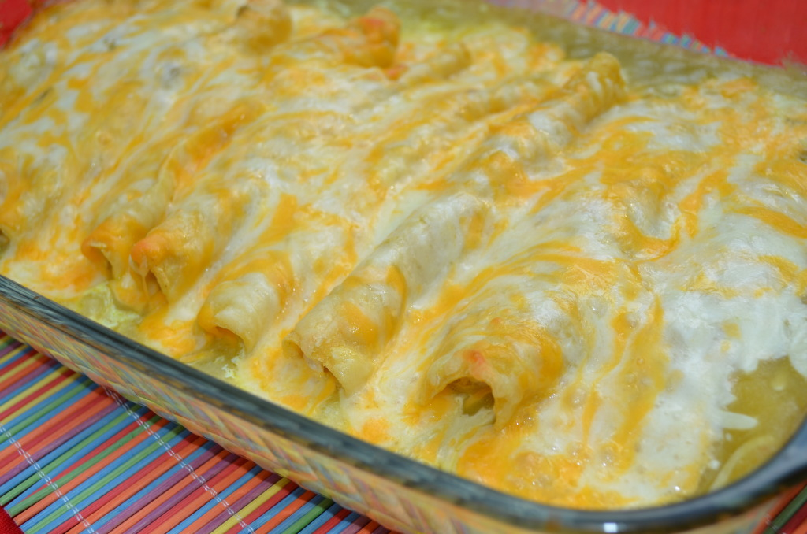

Chicken Enchiladas Recipe

Delicious Sour Cream Chicken Enchiladas
This is a simple and easy, albeit time-consuming, recipe to make some delicious chicken enchiladas. The process
will take about an hour though 40 of those minutes are waiting for the oven to finish cooking your dish. Be
aware the process will involve shredding hot chicken that could cause possible burns as well as frying tortillas
that seem to have the life goal of falling apart before they can be set out of the pan.
Ingredients
- 1-2 chicken breast
- 1 can green chiles
- 2 cans cream of chicken
- 1/2 cup sour cream
- Dash of salt
- Dash of pepper
- 12 corn tortillas
- Vegetable Oil
- 1 block cheddar cheese
- 1/2 white onion
Steps
- Heat oven to 375F. Once heated, place chicken breasts in a pan and into oven for 20 minutes. If still not
cooked, keep in oven until fully cooked.
- While you wait, chop your onion in half and dice the onion into small cubes. You should also shred your
cheese if you need to at this time.
- Once the chicken is fully cooked, take it out of the oven. It is advisable to wait for the chicken
to cool down a bit as you can burn your hands while shredding chicken that hot. You can also
use external utensils to shred the chicken.
- Once shredded, place shredded chicken into a large bowl and add your sour cream, green chiles, diced onion,
cream of chicken, and your salt and pepper before mixing it all together.
- Heat up oil in a pan and prepare to briefly fry the corn tortillas. You will want to fry both sides but only
for a quick moment, just until they're softer and a tiny bit crispy.
- After you are done with the tortillas, you can place them one by one in a pan/casserole dish and place a
clump of the shredded chicken mix within each tortilla, folding it closed after you have a satisfactory
amount.
- Sprinkle cheese on top once the dish is full and place in the oven once more for around 20 minutes until
cheese is melted. Take out and let it cool before enjoying your awaiting heavenly dish.
Return to Homepage